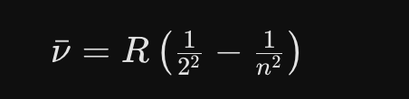

Übungen & Prompts
Tippen Sie auf einen Prompt-Block, um ihn zu kopieren.
Zuerst: Ihr LLM öffnen
Noch kein LLM offen? Wählen Sie eines. Für dieses Training genügen die kostenlosen Versionen. Am Laptop am einfachsten "Im Browser öffnen".
Den Bildschirm teilen
Der wichtigste Handgriff des Tages, und er dauert zehn Sekunden. Links die Folien, rechts dieses Übungsblatt und Ihr LLM. So arbeiten Sie heute den ganzen Tag.
Mac
Den grünen Knopf links oben im Fenster gedrückt halten, nicht klicken. Es erscheinen zwei Hälften. Die gewünschte Hälfte anklicken, dann aus der Liste das zweite Fenster wählen.
Windows
Fenster anklicken, dann Windows-Taste + Pfeil links. Das Fenster springt in die linke Hälfte, und Windows zeigt die übrigen Fenster zur Auswahl für rechts. Das zweite Fenster anklicken.
Geht auf jedem Laptop, kein zweiter Monitor nötig. Wenn gar nichts klappt: Fenster mit der Maus an den linken oder rechten Bildschirmrand ziehen, bis eine Hälfte aufleuchtet, loslassen.
Wer heute nicht teilt, klickt den ganzen Tag zwischen Folien und Übungsblatt hin und her und verliert bei jedem Wechsel den Faden.
Die Namensliste
Derselbe Prompt, drei Nachbarländer, und ein Blick auf den Bildschirm neben Ihnen. Achten Sie nicht darauf, ob die Namen stimmen. Achten Sie darauf, welche Namen kommen. 10 Minuten.
Schritt 1: Runde 1, Österreich
Schritt 2: Zum Nachbarn schauen
Ihr Sitznachbar hat denselben Prompt abgeschickt. Bevor Sie hinüberschauen, schätzen Sie: Wie viele der 10 Nachnamen stehen auf beiden Listen?
Meine Schätzung: ________ von 10 · Tatsächlich: ________ von 10
Schritt 3: Runde 2 und 3, im selben Chat weiterschreiben
Schicken Sie die beiden Nachrichten nacheinander. Warten Sie jedes Mal die Antwort ab.
Drei Nachbarländer, zwei davon mit derselben Sprache. Trotzdem drei verschiedene Listen.
Schritt 4: Vergleichen
- Was hat sich zwischen den drei Listen verändert, und was ist gleich geblieben?
- Denken Sie an Ihre eigene Abteilung. Wie viele der Namen, die dort wirklich stehen, hätte die KI in ihre Österreich-Liste geschrieben?
- Schreiben Sie eine Zeile auf: Wo in Ihrer Arbeit liefert Ihnen die KI das Häufigste, ohne dass Sie je erfahren, was sie weggelassen hat?
Wenn Sie früher fertig sind
Hängen Sie im selben Chat noch zwei Runden an:
Auflösung (erst aufklappen, wenn Sie verglichen haben)
Die KI hat sich diese Namen nicht ausgedacht. Sie hat ausgerechnet, welche Namen am häufigsten vorkommen. Deshalb steht neben Ihnen fast dieselbe Liste.
Prompten: Homeoffice-Regelung
Arbeiten Sie zu zweit. Beide prompten, danach vergleichen Sie Ihre Ergebnisse.
Schritt 1: Der einfache Prompt
Kopieren Sie diesen Prompt und schauen Sie, was die KI daraus macht:
Schritt 2: Was die KI nicht weiß (aufklappen)
1. Platzproblem: Wir haben Schreibtische abgebaut, um Miete zu sparen. Wenn 100% gleichzeitig kommen, gibt es nicht genug Arbeitsplätze.
2. Infrastruktur: Meetingräume, Drucker, WLAN: alles auf reduzierten Betrieb ausgelegt. Mehr Leute überlasten alles sofort.
3. Logistik: Pendlerströme, Parkplatzknappheit, Kantinenkapazität. Sicherheits- und Reinigungsaufwand steigt.
4. Finanzielle Risiken: Kurzfristig neue Arbeitsplätze schaffen: Möbel, Hardware, Lizenzen, eventuell Mietflächen erweitern.
5. Akzeptanz: Mitarbeiter sind genervt: "Schon wieder neue Regeln, zuerst flexible Arbeitsmodelle, jetzt zurück ins Büro?" Gefühl der Fremdbestimmung. Misstrauen gegenüber dem Sinn.
Frage an Sie: Merken Sie den Unterschied? Die KI wusste nichts davon. Sie hat geraten. Deshalb war das Ergebnis generisch.
Schritt 3: Jetzt mit Kontext probieren (aufklappen)
Probieren Sie den gleichen Prompt nochmal, aber geben Sie der KI den Kontext mit. Hier der vollständige Prompt zum Kopieren:
Vergleichen Sie: Gleiche KI, gleiche Frage, aber mit Kontext. Völlig anderes Ergebnis.
Schritt 4: Die Stil-Maschine (aufklappen)
Jetzt lassen Sie die KI den gleichen Inhalt in völlig verschiedenen Stilen umschreiben:
Erkenntnis: Die KI imitiert Muster, sie "denkt" nicht. Und: Tonalität im Prompt steuert alles.
Zwei davon sind keine Spielerei. Beim Dialekt merken Sie, wo die KI dünn wird. Beim letzten haben Sie etwas in der Hand, das Sie morgen wirklich verschicken könnten.
CITE(R) Framework:Jetzt sind Sie dran!
Sie planen eine Reise. Kurze Nachrichten, jede legt eine Schicht drauf. Mittendrin ändert sich etwas, und danach ändert es sich zurück. Um die Reise geht es nicht.
| Baustein | Frage |
|---|---|
| C = Context | Was ist die Ausgangssituation? |
| I = Intent | Was genau will ich erreichen? |
| T = Task | Was soll die KI machen? |
| E = Execution | Wie soll sie es machen? (Format, Ton, Länge) |
| R = Reality | Stimmt das Ergebnis? Was muss ich prüfen? |
Schritt 1 (T = Task): Nur die Aufgabe
Eine Zeile, sonst nichts. Schauen Sie sich an, was zurückkommt.
Schritt 2 (C = Context): Wer fährt mit
Dazwischen: Es ändert sich etwas
Warten Sie die Antwort ab und lesen Sie sie kurz an.
Dazwischen: Stopp, nicht weitertippen
Die Kinder kommen doch nicht mit. Es bleibt bei den 4 Erwachsenen. Was machen Sie jetzt? Überlegen Sie kurz, bevor Sie aufklappen.
Erst überlegen, dann hier aufklappen
Schauen Sie nach, was übrig geblieben ist: Ihr Reiseziel steht noch, und die vier Erwachsenen sind zurück.
Gelöscht ist nichts. Die Nachricht steht weiter da und die KI liest sie mit. Sie haben ihr nur gesagt, wie sie damit umgehen soll.
Schritt 3 (I = Intent): Das Ziel nachschieben
Neue Nachricht, im selben Chat. Nicht alles noch einmal schreiben.
Schritt 4 (E = Execution): Die Ausführung nachschieben
Sie haben nichts wiederholt. Ein paar kurze Nachrichten, und am Ende steht ein vollständiger Auftrag. Den Kontext trägt das Gespräch, nicht die einzelne Nachricht.
Zum Schluss: Eine Zeile aufschreiben
Wann haben Sie zuletzt einen Chat weggeworfen und von vorne angefangen, weil etwas schiefgelaufen war? Was hätten Sie stattdessen sagen können?
Kurz vorher: die 3-Sekunden-Regel
Ab hier arbeiten Sie mit Material aus Ihrer eigenen Firma. Drei Sekunden, bevor Sie Enter drücken:
- Namen raus. Aus Frau Gruber wird "eine Kollegin aus dem Einkauf".
- Zahlen raus. Aus 47.500 Euro wird "ein mittlerer fünfstelliger Betrag".
- Strategien und Interna raus. Abstrahieren, nicht abschreiben.
Die Faustregel: Behandeln Sie die KI wie einen Praktikanten, der im öffentlichen Bus sitzt. Er ist hilfreich, aber er sitzt nicht allein da.
Ihre KI-Wissensbasis aufbauen
Erstellen Sie zwei Dokumente, die Ihre KI ab sofort schlauer machen. Kollegen aus der gleichen Firma: arbeiten Sie zusammen!
Bei längeren Aufgaben verliert die KI den roten Faden, ohne es zu sagen. Fragen Sie deshalb mittendrin nach, ob sie noch weiß, worum es geht:
Passt die Antwort nicht zu Ihrem Ziel, haben Sie die Abweichung gefunden, bevor sie im Ergebnis landet. Sie behalten die Kontrolle, nicht die KI.
Zwei Teile, beide gehören zusammen. 1a ist Ihre Firma, die lässt die KI selbst recherchieren, Sie kopieren nur den Prompt. 1b ist Ihre Rolle, die beschreiben Sie selbst. Speichern Sie beide Dokumente, wir verwenden sie gleich in einem Projekt.
1a: Meine Firma, die KI recherchiert und Sie kopieren nur
Sie müssen nichts über Ihre Firma zusammenschreiben. Die KI sucht selbst nach. Sie setzen den Firmennamen ein und schicken ab.
Schritt 1:Kopieren, Firmennamen einsetzen, abschicken
Ihr LLM braucht dafür Internetzugang. Bei ChatGPT, Copilot, Gemini und Claude ist der in den kostenlosen Versionen dabei.
Schritte 2-4 (erst aufklappen wenn Schritt 1 fertig)
Schritt 2:Zwei Angaben prüfen
Nehmen Sie sich zwei Angaben heraus, die Sie sicher beurteilen können, zum Beispiel Mitarbeiterzahl, Gründungsjahr oder Standorte. Stimmt etwas nicht, korrigieren Sie es:
Das ist kein Extraschritt, das ist die Übung. Eine KI erfindet Zahlen über Ihre echte Firma genauso bereitwillig wie über alles andere. Sie merken es nur, wenn Sie hinschauen.
Schritt 3:Verfeinern
Schritt 4:Speichern
Kopieren Sie das fertige Dokument und speichern Sie es (z.B. in einer Notiz-App, Word, oder direkt in den Custom Instructions Ihres LLMs).
1b: Meine Rolle, die schreiben Sie selbst
Ihre Firma findet die KI im Netz. Ihre Rolle nicht. Was Sie tatsächlich den ganzen Tag tun, steht nirgends geschrieben, deshalb machen Sie diesen Teil selbst. Die KI stellt Ihnen dazu Fragen.
Tipp: Diktieren statt tippen! Die KI versteht Ihre Antworten auch gesprochen.
Schritt 1:Kopieren und abschicken
Beantworten Sie die Fragen der KI. Warten Sie danach auf die nächste Anweisung.
Schritte 2-4 (erst aufklappen wenn Schritt 1 fertig)
Schritt 2:Dokument erstellen lassen
Kurz prüfen, ob die KI noch auf Kurs ist:
Schritt 3:Verfeinern
Schritt 4:Speichern
Kopieren Sie das fertige Dokument und speichern Sie es.
Optional: Ein Prozess aus meinem Alltag (wenn Sie schneller sind)
Beschreiben Sie einen Prozess, den Sie regelmäßig durchführen (z.B. Genehmigung, Bestellung, Onboarding, Reporting).
Schritt 1:Kopieren und abschicken
Beantworten Sie die Fragen der KI. Warten Sie danach auf die nächste Anweisung.
Schritte 2-4 (erst aufklappen wenn Schritt 1 fertig)
Schritt 2:Dokument erstellen lassen
Kurz prüfen, ob die KI noch auf Kurs ist:
Schritt 3:Verfeinern
Schritt 4:Speichern
Kopieren Sie das fertige Dokument und speichern Sie es.
Weitere Optionen (für Fortgeschrittene)
Wenn 1a und 1b schon fertig sind oder Sie etwas anderes brauchen:
- Mein Team:Wer macht was, Stärken, Kommunikationswege
- Mein Schreibstil:Wie sollen E-Mails klingen, formell/informell, Du/Sie
- Mein Kunde / Meine Zielgruppe:Wer kauft bei uns, was brauchen die
- Ein Projekt:Aktuelles Projekt mit Zielen, Timeline, Beteiligten
Wichtig: Speichern Sie Ihre Dokumente! Wir verwenden sie gleich im nächsten Schritt, wenn wir Projekte anlegen.
Schauen Sie sich das hier an. Zehn Sekunden.

Wenn Sie das jetzt nicht erklären können: genau darum geht es. Schicken Sie die zwei Prompts nacheinander ab und achten Sie darauf, wie sich die Antwort verändert.
Wenn Sie bei dieser Antwort nichts verstanden haben, ist alles richtig gelaufen. Jetzt dieselbe Formel noch einmal:
Nicht die Physik ist hier die Lehre, sondern die Flughöhe. Die Stufe stellen Sie ein, nicht die KI. Und keine Sorge: ob die Physik stimmt, kann hier niemand im Raum prüfen. Das ist bei Ihren eigenen Themen anders.
Lieferant vs. Tutor
Person A = Lieferant-Modus, Person B = Tutor-Modus. Gleiche Aufgabe, verschiedene Ergebnisse.
| Der Lieferant | Der Tutor | |
|---|---|---|
| Wunsch | "Ich muss schnell wissen, was '20' auf Englisch heißt." | "Ich will verstehen, wie die englischen Zahlen funktionieren." |
| Prompt | "Was heißt '20' auf Englisch?" | "Du bist mein Englischlehrer. Bring mir bei, wie man zählt. Gib mir nicht sofort die Lösung, sondern erkläre mir die Regel und lass mich üben." |
| Antwort | "Twenty." (Ende) | "Gerne! Im Englischen enden die Zehnerzahlen meist auf '-ty'… Jetzt du: Was heißt '60'?" |
| Nutzen | Nichts gelernt. | Wissen aufgebaut. |
Mahlzeit.
Wir sehen uns nach der Mittagspause.
P.S. Falls Sie uns schon am Vormittag verlassen: kurz schreiben, dann schicke ich Ihnen die Unterlagen nach.
Unterlagen anfordern →Kurz vorher: Bildschirm wieder teilen
Wie am Vormittag: links die Folien, rechts dieses Übungsblatt und Ihr Werkzeug. Am Nachmittag brauchen Sie es öfter, weil zwei Fenster nebeneinander stehen.
Erinnerung: so teilen Sie den Bildschirm
Mac: den grünen Knopf links oben gedrückt halten, nicht klicken. Hälfte anklicken, zweites Fenster wählen.
Windows: Fenster anklicken, dann Windows-Taste + Pfeil links. Dann rechts das zweite Fenster aus der Auswahl klicken.
Projekt anlegen und System-Prompt schreiben
Machen Sie Ihre KI dauerhaft schlauer: ein Projekt mit eigener Datenbank und festen Regeln. Nehmen Sie Ihre Kontextdokumente vom Vormittag.
Ein Projekt ist ein eigener Raum, in dem die KI Ihre Dokumente als feste Datenbank kennt und sich an Ihre Regeln (den System-Prompt) hält. Jede neue Konversation im Projekt startet mit diesem Wissen. Drei Schritte, egal welches Tool: Projekt anlegen, Datenbank hochladen, System-Prompt einfügen. Der System-Prompt unten ist ein Beispiel, kein Rezept. Er beschreibt eine erfundene Rolle. Schreiben Sie ihn auf sich um, sonst antwortet Ihnen ein Assistent für jemand anderen.
Zwei Sachen folgen daraus. Was Sie im Projekt einstellen, gilt auch in jedem neuen Chat dieses Projekts, ohne dass Sie es wiederholen. Und wenn sich zwei Ebenen widersprechen, gewinnt fast immer die innere, also Ihre aktuelle Nachricht.
Wählen Sie Ihr Tool:
ChatGPT: Projekt anlegen
1. Projekt anlegen
Links in der Seitenleiste auf "Neues Projekt" (New Project). Namen vergeben (z.B. "Meine Firma").
2. Datenbank hochladen
Laden Sie im Projekt Ihre Kontextdokumente vom Vormittag hoch (Unternehmen, Rolle, Prozess). Das ist die Wissensbasis.
3. System-Prompt einfügen
Öffnen Sie die Projektanweisungen und fügen Sie den System-Prompt von oben ein. Passen Sie die [Klammern] an.
Claude: Projekt anlegen
1. Projekt anlegen
In der linken Seitenleiste auf "Projekte", dann "Neues Projekt". Namen vergeben.
2. Datenbank hochladen
Laden Sie Ihre Kontextdokumente in das Projektwissen hoch. Das ist Claudes fester Wissensspeicher.
3. System-Prompt einfügen
Unter "Projektanweisungen" den System-Prompt von oben einfügen und anpassen.
Gemini: Gem anlegen
Bei Gemini heißt das Projekt "Gem": ein eigener, gespeicherter Assistent.
1. Gem anlegen
Links auf "Gems verwalten" (Gem-Manager), dann "Neuer Gem". Namen vergeben.
2. Datenbank hochladen
Fügen Sie unter "Wissen" Ihre Kontextdokumente als Dateien hinzu.
3. System-Prompt einfügen
In das Anweisungen-Feld den System-Prompt von oben einfügen. Speichern.
Copilot: persönlichen Assistenten anlegen
[Menüpfade vor dem Training prüfen — Copilot unterscheidet Consumer- (Copilot Notebooks) und Microsoft-365-Version (Copilot Pages/Agents), UI ändert sich häufig.]
1. Notebook/Page anlegen
Eigenen, dauerhaften Assistenten anlegen und benennen.
2. Datenbank hochladen
Kontextdokumente als Dateien/Quellen hinzufügen.
3. System-Prompt einfügen
Den System-Prompt von oben in die Anweisungen einfügen. Speichern.
Ab jetzt kennt die KI in diesem Projekt Ihre Firma, Ihre Rolle und Ihren Stil, ohne dass Sie es jedes Mal neu erklären. Testen Sie es sofort mit einer echten Aufgabe.
EU AI Act + NotebookLM
Ihre erste "sichere Wissensdatenbank": Ein echtes EU-Dokument, keine Halluzinationen.
Schritt 1: PDF herunterladen
EU AI Act (Deutsch) herunterladen
Schritt 2: NotebookLM öffnen
Gehen Sie auf notebooklm.google.com. Erstellen Sie ein neues Notizbuch. Laden Sie das PDF hoch.
Schritt 3: Fragen stellen
Achten Sie auf die Zitate (graue Ziffern) am Ende der Antworten. NotebookLM erfindet nichts, es zeigt Ihnen immer die Quelle.
Schritt 3b: Persönlich machen
Laden Sie zusätzlich Ihr Kontextdokument vom Vormittag (Übung 4: Unternehmen oder Rolle) als zweite Quelle in dasselbe Notizbuch hoch. Jetzt kann NotebookLM beide Quellen gemeinsam lesen.
Der Unterschied zu vorhin: nicht mehr "was sagt das Gesetz allgemein", sondern "was heißt das Gesetz für mich".
Schritt 4: In Gruppen, drei Werkstücke
NotebookLM kann aus Ihren Quellen selbst etwas bauen. Öffnen Sie im Notizbuch rechts das Studio. Jede Gruppe macht etwas anderes und zeigt es danach kurz her.
Die Prompts dazu
Schritt 5: Herzeigen
Laden Sie Ihr Werkstück herunter und hängen Sie es in das gemeinsame Dokument:
Dann stellt jede Gruppe ihr Werkstück in einem Satz vor: was haben wir gebaut, und wofür würde man es benutzen.
Dieselbe Quelle, drei völlig verschiedene Ergebnisse. Nicht das Dokument entscheidet, was herauskommt, sondern das, was Sie bestellen.
Split-Screen: Quellentreue vs. Blindflug
Zwei Fenster, dieselbe Frage. Sehen Sie live, wo eine KI ohne Quelle rät statt zu wissen.
Aufbau
Öffnen Sie zwei Fenster nebeneinander: links Ihr NotebookLM von Übung 7 (EU AI Act geladen), rechts ein frischer Chat in ChatGPT, Claude oder Gemini ohne hochgeladenes Dokument. Stellen Sie beiden dieselbe Frage, gleichzeitig.
Runde 1: Die Zahlen
Vergleichen Sie: zitiert eine Antwort die genaue Textstelle, oder klingt sie nur selbstbewusst? Notieren Sie, wo die Antworten auseinandergehen.
Auflösung (erst aufklappen, wenn beide Antworten da sind)
Geldbuße: bis zu 35.000.000 EUR oder 7 % des weltweiten Jahresumsatzes, je nachdem was höher ist (Art. 99 Abs. 3). Viele KI-Modelle verwechseln das mit der DSGVO (4 % / 20 Mio. EUR) — ähnliche Größenordnung, anderes Gesetz.
Termine: Verbote gelten bereits ab 2. Februar 2025, die Verordnung insgesamt ab 2. August 2026, die Pflichten für Hochrisiko-Systeme nach Artikel 6 Absatz 1 erst ab 2. August 2027. Ein Modell ohne Quelle nennt oft nur ein Datum für alles.
Anhang III (8 Bereiche): Biometrie · Kritische Infrastruktur · Bildung · Beschäftigung · Zugänglichkeit & Grundversorgung (u.a. Kreditwürdigkeit, Versicherung, Notrufe) · Strafverfolgung · Migration/Asyl/Grenzkontrolle · Rechtspflege & demokratische Prozesse.
Runde 2: Schatten-KI, dieselbe Probe
Fügen Sie im NotebookLM-Fenster eine neue Quelle hinzu: Shadow AI: Heimliche KI-Nutzung gefährdet Unternehmensdaten (Heise). Stellen Sie wieder dieselbe Frage in beiden Fenstern:
Auflösung
57 Prozent laut der Studie "Trust, Attitudes and Use of Artificial Intelligence: A Global Study 2025" (University of Melbourne / KPMG International), zitiert im Heise-Artikel. Ein Modell ohne diese Quelle rät meist eine andere, plausibel klingende Zahl.
Runde 3: Eine Frage, die gar nicht im Dokument steht
Wieder dieselbe Frage in beide Fenster:
Schauen Sie zuerst nach links, dann nach rechts. Achten Sie nicht auf die Antwort, sondern darauf, was jede Seite tut, wenn sie es nicht aus einer Quelle weiß.
Auflösung
Links antwortet nicht. NotebookLM kennt nur seine Quellen, und in einem EU-Gesetz steht kein Fußballergebnis. Es sagt Ihnen das auch, statt sich etwas auszudenken.
Rechts antwortet. Ob die Antwort stimmt, ist die zweite Frage: Hat das Modell nachgeschlagen, oder erinnert es sich an seinen Trainingsstand? Fragen Sie nach: "Woher weißt du das?"
Das ist kein Fehler des einen und kein Verdienst des anderen. Es sind zwei verschiedene Werkzeuge. Das eine antwortet nur aus dem, was Sie ihm geben. Das andere antwortet immer. Sie müssen wissen, vor welchem Sie gerade sitzen.
Runde 4: Jetzt bekommt auch die rechte Seite das Dokument
Laden Sie das EU-AI-Act-PDF auch rechts hoch, in ChatGPT, Claude oder Gemini. Jetzt haben beide Seiten dieselbe Quelle. Stellen Sie noch einmal eine Frage von oben.
Vergleichen Sie diesmal nicht richtig gegen falsch, sondern wie die beiden mit derselben Quelle umgehen: Wer zeigt Ihnen bei jedem Satz, woher er ihn hat? Wer fasst zusammen und mischt eigenes Wissen dazu? Und was passiert, wenn das Dokument sehr lang ist?
Die Frage an sich
Genau das ist Schatten-KI im eigenen Unternehmen: Mitarbeiter fragen ein Modell ohne Quelle, bekommen eine selbstbewusste Antwort, und niemand prüft nach. Der Unterschied zwischen links und rechts in diesem Fenster ist der Unterschied zwischen kontrollierter und unkontrollierter KI-Nutzung.
Welches Format versteht die Maschine?
PLATZHALTER. Inhalt wird noch ausgearbeitet.
Geplant: ein kurzes Quiz dazu, in welcher Form man einer KI etwas gibt und in welcher Form man etwas zurückverlangt. HTML, Markdown, reiner Text, Screenshot, PDF, Tabelle.
- Was gebe ich hinein: abgetippter Text, Screenshot, PDF, Link?
- Was verlange ich zurück: Fließtext, Markdown, Tabelle, HTML?
- Wann ist ein Screenshot besser als Text, und wann ist er das Gegenteil?
Offen: Quizfragen, Antworten, Zeitbox. Kommt von Jakub.
Prompt Layering: Das "Tribunal"
a.k.a. Salami-Taktik. Kopieren Sie die Prompts nacheinander in denselben Chat.
Schritt 1: Die Vision (Der CEO)
Schritt 2: Der Realitäts-Check (Controller)
Schritt 3: Der Faktor Mensch (HR)
Schritt 4: Die Synthese (Projektleiter)
Prompt Layering: Die Städtereise
Wie Übung 9, aber diesmal mit einer festen Einschränkung von Anfang an. Kopieren Sie die Prompts nacheinander in denselben Chat.
Schritt 1: Der Rahmen
Tauschen Sie Stadt und Urlaubsart gerne gegen Ihre eigene — Hauptsache, es bleiben echte, konkrete Einschränkungen drin (nicht nur "schöner Urlaub").
Schritt 2: Anreichern
Schritt 3: Reality-Check
Das ist derselbe Trick wie beim Split-Screen heute Mittag: mehrere Einschränkungen gleichzeitig, die die KI ernst nehmen MUSS. Ein erfundenes veganes Restaurant oder eine Aktivität, die für ein 6-Jähriges viel zu gefährlich ist, sind genau die Art Fehler, die im echten Leben peinlich oder teuer werden.
Schritt 4: Zusammenfassen
Weiterdenken (nicht heute, für zu Hause): denselben fertigen Plan als Prompt an ein Bild-Tool geben und sich ein Moodboard der Reise erstellen lassen.
Jetzt üben Sie, was SIE wollen
Zeit für Ihren eigenen Fall. Wählen Sie eine Nummer und legen Sie los. Jakub kommt an jeden Tisch.
- A) Eigenes Projekt fertig bauen – Projekt + System-Prompt aus Übung 6 vervollständigen.
- B) Eigener Use Case durch CITE(R) – eine echte Aufgabe von A bis Z.
- C) Ein Tool auf Ihre echte Aufgabe – NotebookLM, Perplexity oder ein Assistent.
- D) Das Tribunal (Übung 9) – für eine wichtige Entscheidung, mehrere Perspektiven.
- E) Ihre eigene Frage – was Sie schon immer mit KI lösen wollten.
Am Ende: 2-3 Freiwillige zeigen ihren Durchlauf, live gecoacht.
Bewerten Sie Ihre Entscheidung, nicht das Ergebnis
Nach Ihrem Durchlauf: kurz zurücktreten und den Prozess prüfen, nicht das Glück.
Ein guter Prompt kann ein schlechtes Ergebnis liefern. Ein fauler Prompt zufällig ein gutes. Wer das Ergebnis bewertet, lernt vom Zufall das Falsche.
Drei Fragen an sich selbst
- Habe ich der KI genug Kontext gegeben, oder habe ich sie raten lassen? (egal, ob die Antwort gut war)
- Habe ich geprüft, oder dem ersten Output vertraut, weil er selbstbewusst klang?
- Wäre das Ergebnis nächste Woche falsch: läge es an meiner Entscheidung oder an Pech? Nur die Entscheidung kann ich ändern.
Der Advocatus Diaboli
Perfekt für wichtige Entscheidungen, Strategien oder heikle E-Mails.
1. Der Entwurf
2. Der Kritiker
3. Die Veredelung
Songtext-Projekt für Suno AI
Ein Projekt, das jedes Thema in einen fertigen Songtext verwandelt und Sie immer zuerst nach dem Stil fragt. Danach: ab in Suno und anhören.
1. Projekt anlegen
Legen Sie wie in Übung 6 ein neues Projekt an (ChatGPT, Claude oder Gemini-Gem). Name z.B. "Songtexte".
2. System-Prompt einfügen
Fügen Sie den System-Prompt von oben in die Projektanweisungen ein. Ab jetzt fragt die KI in diesem Projekt immer zuerst nach dem Stil.
3. Thema geben
4. In Suno anhören
Öffnen Sie suno.com, klicken Sie auf "Create", fügen Sie den Songtext ein, geben Sie den Stil als Beschreibung an und erzeugen Sie den Song.
Für die Talent-Show: Wer traut sich, seinen Song vorzuspielen?
KI-Werkstatt: Ihr eigenes Problem lösen
Jetzt arbeiten Sie an einem echten Pain Point aus Ihrem Arbeitsalltag. Kollegen aus der gleichen Firma: arbeiten Sie zusammen!
Schritt 1: Problem wählen
Wählen Sie ein konkretes Problem, das Sie regelmäßig Zeit kostet. Hier Beispiele nach Branche:
Beispiele, falls Ihnen nichts einfällt (aufklappen)
- Sitzungen und Protokolle: "Wie fasse ich Protokolle und Rundschreiben schneller zusammen, ohne dass etwas Wichtiges wegfällt?"
- Wiederkehrende Berichte: "Wie bringe ich monatliche Berichte in eine gleichbleibende Form, statt jedes Mal neu anzufangen?"
- Viele Standorte, eine Sprache: "Wie vereinheitliche ich Kommunikation, die aus mehreren Stellen kommt?"
- Angebote und Kostenvoranschläge: "Wie erstelle ich Angebote schneller, ohne dass sie nach Baukasten klingen?"
- Anfragen beantworten: "Wie beantworte ich wiederkehrende Kunden- oder Mieteranfragen effizienter?"
- Quellen und Zitate prüfen: "Wie prüfe ich Angaben schneller, ohne dass die KI etwas dazuerfindet?"
- Sensible Unterlagen: "Wie beschleunige ich Recherche und Korrespondenz, ohne Datenschutz zu verletzen?"
- Einzelkämpfer: "Wie nutze ich KI als drittes Teammitglied für Angebote, Mails und Organisation?"
Kein Kontextdokument vom Vormittag? Nehmen Sie eines von diesen
Erfundene Firmen, aber vollständig genug, damit die Übung funktioniert. Suchen Sie die, die Ihrer Arbeit am nächsten kommt, und kopieren Sie den Block als Kontext.
A) Verband mit vielen Außenstellen
B) Gewerbebetrieb mit Außendienst
C) Dienstleistung mit Mandanten
Schritt 2: Lösung bauen mit CITE (aufklappen wenn bereit)
Nutzen Sie Ihr Kontextdokument vom Vormittag aus Übung 4:
Schritt 3: Human in the Loop (aufklappen wenn bereit)
Prüfen Sie den Output kritisch:
- Stimmen die Fakten? Hat die KI etwas erfunden?
- Ist das realistisch für Ihre Firma?
- Würden Sie das so an Ihren Chef schicken?
- Klingt es nach KI oder nach Ihnen? (Tipp: Zu viele Gedankenstriche = KI-Stil)
Die 3 Coach-Fragen
Lassen Sie die KI (oder einen echten Experten) die versteckten Grundlagen aufdecken. An Ihrer eigenen Aufgabe.
Stellen Sie diese drei Fragen nacheinander im selben Chat:
1. Die versteckten Grundlagen
2. Die typischen Fehler und Ego-Fallen
3. Wie werde ICH besser
Golf-Regel: Alle wollen weit abschlagen, aber Putten gewinnt das Spiel. Die KI zeigt Ihnen, wo Ihr Putten liegt.
Modelling of Excellence
Vom Hausarzt zum Spezialisten
Die Überweisung (Das Casting)
Die Anamnese (Die Untersuchung)
Das Rezept (Die Lösung)
Das Training ist vorbei. Die Reise nicht.
In Kontakt bleiben →